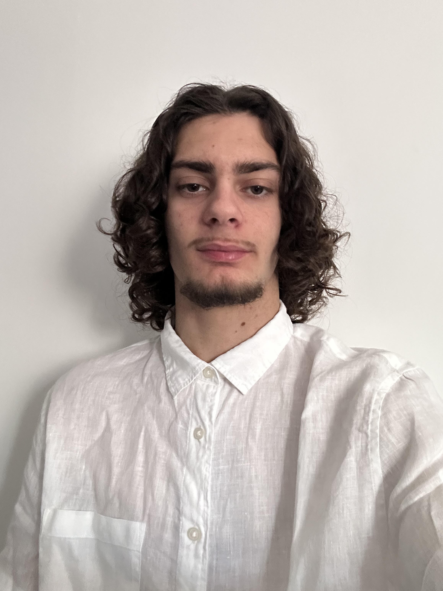

Bonjour, je suis Dorian Ponsada
Étudiant en BTS Services Informatiques aux Organisations à l'ICFA Campus Saint-François à Montpellier, passionné par la cybersécurité et le réseau. J'aime résoudre des problèmes complexes, apprendre de nouvelles technologies et relever des défis techniques notamment dans le domaine de la cybersécurité afin de comprendre afin de sécuriser l'avenir de l'informatique.
Mon objectif : devenir un expert en informatique, avec un focus sur la sécurité des réseau et web.
Je réalise mon alternance chez Nexpublica, une entreprise de services du numérique (ESN) spécialisée dans les solutions innovantes pour les organisations majoritairement publiques et mais aussi privées.